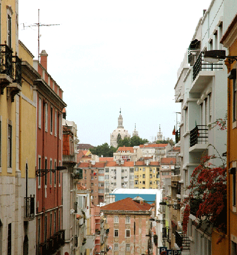

Página inicial
Descubra Lisboa e o Bairro Alto
As notícias do Bairro Alto
Os bons endereços e as hiperligações úteis
|

O meu nome é Isalina Carvalho e nasci no Bairro Alto em 1944.
O Bairro Alto encontra-se empoleirado na encosta da mais alta das sete colinas de Lisboa. É um dos bairros mais antigos da capital (mais de 400 anos) e também um dos mais populares.
Desde os grandes trabalhos de renovação realizados na década de 90 pela câmara municipal, o bairro já não é exactamente o bairro pitoresco da minha infância mas ainda lhe estou fielmente apegada.
Adoro as suas inumeráveis ruelas repletas de histórias, as suas escadarias que descem rapidamente as encostas da colina, as suas fachadas de cores usadas, as suas varandas floridas em ferro forjado, as suas livrarias antigas, as suas tascas espalhadas onde ainda podemos beber um vinho branco ou um Porto sem idade, o seu miradouro Santa Catarina, o seu eléctrico, os seus ambientes sonoros e os seus odores a sardinha assada.
Sair para ir beber um copo e cantar, isto faz parte da cultura profunda do meu bairro. Isto continua a fascinar-me, assim como o fará sempre.
O Bairro Alto é o teatro da minha vida.
|
|